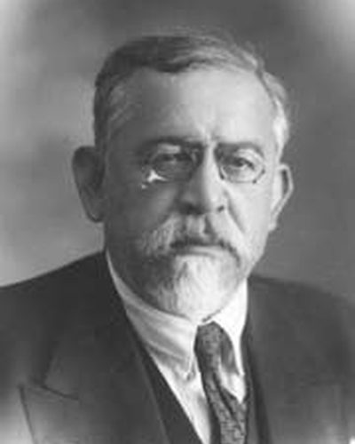

Ideologies / Nationalist
What is Pan Turkism?
Pan Turkism is a political ideology in the Nationalist family. Akçura weighed three courses open to the Ottoman state. Ottomanism, the making of one nation out of all its subjects, he judged a failure. Pan Islamism, uniting all Muslims, would be blocked by the great powers that ruled Muslim lands. The third and newest course was a political nation founded on the Turkish race, joining the Turks of the empire with the Turkic peoples of Russia and Central Asia. He set out its advantages while leaving the final choice open.
A political union of all the Turks.
Defined from: Yusuf Akçura, Three Types of Policy (1904)
See how close you are to Pan Turkism Dare a friend to answer as one


Where Pan Turkism stands on 13 axes
Each axis runs from 0 to 100. A score of 50 is the middle. On a classic compass it sits in the Authoritarian Right quadrant.
| Axis | Position | Score | In words |
|---|---|---|---|
| EconomyMarket to Planned | 50 | Balanced | |
| OwnershipPrivate to Collective | 40 | Leans Private | |
| RightsLiberty to Security | 65 | Leans Security | |
| GovernmentDemocracy to Autocracy | 65 | Leans Autocracy | |
| StructureDecentralised to Centralised | 70 | Strongly Centralised | |
| NationInternationalist to Nationalist | 95 | Very strongly Nationalist | |
| ImmigrationMulticulturalist to Assimilationist | 85 | Very strongly Assimilationist | |
| ValuesProgressive to Traditional | 45 | Balanced | |
| TechnologyAccelerationist to Precautionary | 35 | Leans Accelerationist | |
| EnvironmentIndustrialist to Environmentalist | 25 | Strongly Industrialist | |
| ReligionSecular to Religious | 30 | Strongly Secular | |
| MilitaryPacifist to Militarist | 65 | Leans Militarist | |
| TradeFree Trade to Protectionist | 65 | Leans Protectionist |
Ideologies closest to Pan Turkism
- Gaullism86% alike
- Three Principles of the People86% alike
- Romantic Nationalism84% alike
- Revisionist Zionism84% alike
- Garveyism82% alike
Its opposite on this map is Tolstoyan Anarcho Pacifism, at 30%.
Parties near Pan Turkism
- KuomintangChina. Three Principles of the People (1924)87% alike
- Party for FreedomNetherlands. Dit is uw land! (2025)86% alike
- National RallyFrance. 22 mesures pour 2022 (2022)86% alike
- Arab Ba'ath PartySyria. Constitution of the Arab Ba'ath Party (1947)84% alike
Common questions
What is Pan Turkism?
Pan Turkism is a political ideology in the Nationalist family. Akçura weighed three courses open to the Ottoman state. Ottomanism, the making of one nation out of all its subjects, he judged a failure. Pan Islamism, uniting all Muslims, would be blocked by the great powers that ruled Muslim lands. The third and newest course was a political nation founded on the Turkish race, joining the Turks of the empire with the Turkic peoples of Russia and Central Asia. He set out its advantages while leaving the final choice open.
What does Pan Turkism believe?
In one line: A political union of all the Turks. Its strongest positions are Nationalist, Assimilationist, Industrialist. Akçura weighed three courses open to the Ottoman state. Ottomanism, the making of one nation out of all its subjects, he judged a failure. Pan Islamism, uniting all Muslims, would be blocked by the great powers that ruled Muslim lands. The third and newest course was a political nation founded on the Turkish race, joining the Turks of the empire with the Turkic peoples of Russia and Central Asia. He set out its advantages while leaving the final choice open.
Who founded Pan Turkism?
Pan Turkism is defined here from Three Types of Policy (1904) by Yusuf Akçura. The thinker most tied to it is Yusuf Akçura (1876 to 1935).
Is Pan Turkism left wing or right wing?
On a classic two axis compass Pan Turkism falls in the Authoritarian Right quadrant, which means the economic centre and the authoritarian side. Left and right hide a lot, though, which is why EthosScales scores it on thirteen separate axes.
How is Pan Turkism different from Gaullism?
They are close: 86% alike. The biggest gaps are on Government, where Pan Turkism scores 65 and Gaullism scores 45, and Immigration, where Pan Turkism scores 85 and Gaullism scores 65. On each axis, 0 is one end and 100 is the other.
Think this is wrong? Suggest a correction. The scores are editorial estimates.